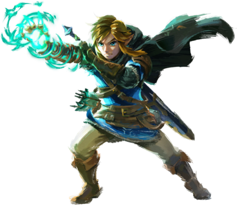
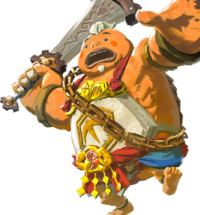
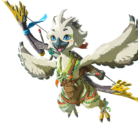
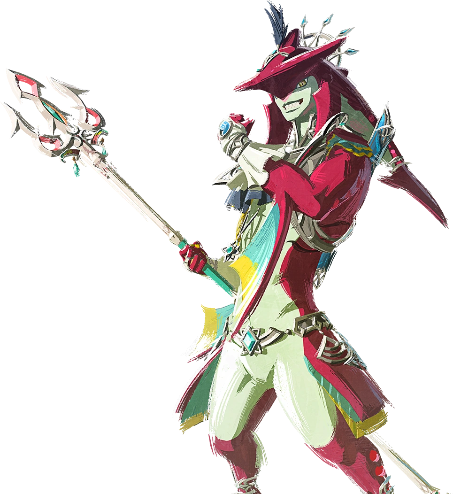

Characters
Link
Link also known as the hero of hyrule is the protagonist of the game he is the chosen wielder of the master sword and bodyguard appointed to the princess before the calamity.Link is originally from hateno town in the east of Hyrule near the foot of mount Lanayru He is a masterful swordsmen and archer and he makes use of his powers to help the citizens of hyrule. he is a Hylian by race and is voiced by kengo takanishi
Princess Zelda

Princess Zelda is the ruler of hyrule, she is intrested in reasearch of her country's past which leads her to explore the chasm beneath the castle. In the chasm she gets seperated from link as she teleports. Most of the game's Quest revolves around finding her whereabouts, Later in the game we find that she has travelled through time in an era long past where she learns about the origins of the great demon king threatning her kingdom. She is voiced by patricia summersett
Yunobo
Yunobo belongs to a race called Gorons, he is the grandson of former champion Daruk, In Tears of the kingdom He has his own company called YunoboCo which mines the caves around death mountain the habitat of Gorons where Goron city is located in. When you first enter Goron city you find that every inhabitant is acting weird as you later find that they are under control of a beast inside the volcano of death mountain you team up with Yunobo to destroy the beast using his power of fire, later heis made the sage o fire and you get ability to use his powers anywhere, Yunobo is voiced by joe hernandez.
Tulin
Tulin the sage of wind is a returning character from the prequel Breath of the wild, He lives in Rito villag with his father and grown into a great archer since his last appearance, He helps link defrost the frozen Rito village by destroying the source of the blizzard in the sky. Tulin helps the hero traverse long distances through his powers of wind. He is voiced by Cristina valenzuela.
Sidon
Sidon the sage of water and prince of the zoras is younger brother of mipha the champion of hyrule who dies 100 years ago, he is proficient with his spear and a great swimmer, he helps cleans up the zora's domain and surrounding areas when the demon king's power contaminates the water source, Sidon is voiced by James D.mortellao.